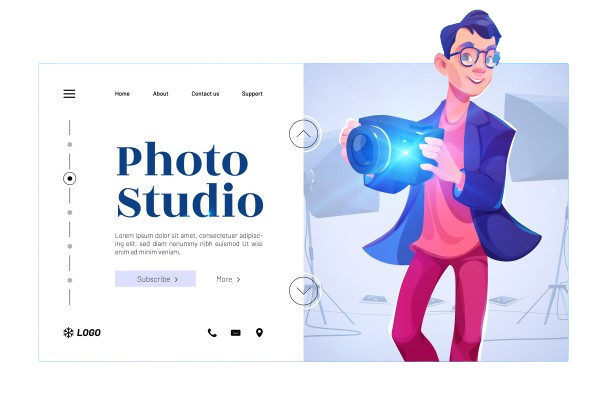
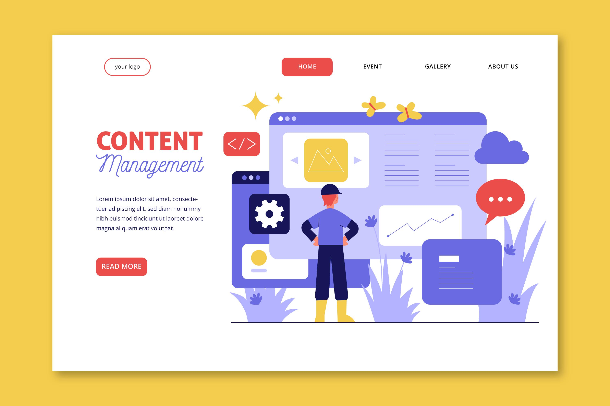

PAID/ SUBSCRIPTION-BASED
Coding:
Kite is an AI-powered code completions tool that integrates with various code editors, including Visual Studio Code, PyCharm, and Atom.
It uses deep learning models to provide context-aware code completions, making coding faster and more efficient.
I-powered code completion tool developed by GitHub in collaboration with OpenAI.
Photo Editing: 
BeFunky is a web-based photo editing and graphic design platform that offers AI-powered tools for photo enhancement, retouching, and collage creation.
Photolemur is an AI-powered photo enhancement tool that automatically analyzes and enhances your photos using advanced algorithms.
Luminar AI is a photo editing software that uses artificial intelligence to simplify complex editing tasks.
Video Editing
A popular online video editing platform that utilizes AI to automatically edit and produce videos.
another online video editing platform that incorporates AI technology to simplify the editing process.
Meetings:

An AI assistant that helps you schedule meetings with anyone. It can handle the back-and-forth emails, find the best time and place, and send calendar invites for you.
An AI-powered app that records and transcribes your conversations in real time. It can also generate summaries, highlights, and action items from your meetings
An AI tool that integrates with your video conferencing platforms and automatically records, transcribes, and indexes your meetings. It can also sync with your CRM and other tools to update your workflows.
Writing and Content Creation:

AI-powered tools for writing marketing copy, ad headlines, product descriptions, and more.
AI writing platform that generates content for various purposes such as blog posts, product descriptions, social media captions, and more.
an AI-powered content generation platform that assists users in creating blog posts, articles, social media content, and more.
Nichesss is an AI writing tool specifically designed for content creators in the eCommerce space.
Assistants:
Allows businesses to build and deploy conversational agents for various use cases, such as customer service, sales support, and internal processes automation.
Pandorabots offers a platform for building and deploying chatbots using their AI technology.
Video:

It allows users to easily create doodle-style animations with drag-and-drop functionality.
A platform that offers a variety of video-making tools, including animated videos, infographic videos, and more.
a cloud-based video-making platform that offers a wide range of tools for creating animations, promotional videos, presentations, and more.
Image Design:
An online design platform that lets you create stunning graphics, logos, flyers, posters, and more. It has thousands of templates, icons, fonts, and images to choose from.
a platform that offers various design services, including an AI-powered logo maker, business card maker, and graphic design tool
A suite of powerful design tools including Adobe Photoshop, Illustrator, and InDesign,
Language Translation:

It supports translations between multiple languages and offers a user-friendly interface.
Provides translation services for businesses and organizations. It offers a range of features including machine translation,
Data analysis and visualisation:

Provides advanced analytics and data visualization solutions that incorporate AI and machine learning technologies.
Offers a cloud-based platform that integrates data from various sources and provides advanced analytics and visualization capabilities.